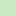

<!doctype html>
<html lang="en">
    <head>
        <meta charset="utf-8">
        <meta http-equiv="X-UA-Compatible" content="IE=edge">
        <meta name="viewport" content="initial-scale=1,user-scalable=no,maximum-scale=1,width=device-width">
        <meta name="mobile-web-app-capable" content="yes">
        <meta name="apple-mobile-web-app-capable" content="yes">
        <link rel="stylesheet" href="css/leaflet.css">
        <link rel="stylesheet" href="css/qgis2web.css"><link rel="stylesheet" href="css/fontawesome-all.min.css">
        <style>
        html, body, #map {
            width: 100%;
            height: 100%;
            padding: 0;
            margin: 0;
        }
        </style>
        <title></title>
    </head>
    <body>
        <div id="map">
        </div>
        <script src="js/qgis2web_expressions.js"></script>
        <script src="js/leaflet.js"></script>
        <script src="js/leaflet.rotatedMarker.js"></script>
        <script src="js/leaflet.pattern.js"></script>
        <script src="js/leaflet-hash.js"></script>
        <script src="js/Autolinker.min.js"></script>
        <script src="js/rbush.min.js"></script>
        <script src="js/labelgun.min.js"></script>
        <script src="js/labels.js"></script>
        <script src="data/Keterjangkauan5000m_1.js"></script>
        <script src="data/Keterjangkauan3000m_2.js"></script>
        <script src="data/Keterjangkauan1000m_3.js"></script>
        <script src="data/jaringanJalanKota_4.js"></script>
        <script src="data/pasar_5.js"></script>
        <script>
        var map = L.map('map', {
            zoomControl:true, maxZoom:28, minZoom:1
        })
        var hash = new L.Hash(map);
        map.attributionControl.setPrefix('<a href="https://github.com/tomchadwin/qgis2web" target="_blank">qgis2web</a> &middot; <a href="https://leafletjs.com" title="A JS library for interactive maps">Leaflet</a> &middot; <a href="https://qgis.org">QGIS</a>');
        var autolinker = new Autolinker({truncate: {length: 30, location: 'smart'}});
        var bounds_group = new L.featureGroup([]);
        function setBounds() {
            if (bounds_group.getLayers().length) {
                map.fitBounds(bounds_group.getBounds());
            }
        }
        map.createPane('pane_ESRIGrayLight_0');
        map.getPane('pane_ESRIGrayLight_0').style.zIndex = 400;
        var layer_ESRIGrayLight_0 = L.tileLayer('http://services.arcgisonline.com/ArcGIS/rest/services/Canvas/World_Light_Gray_Base/MapServer/tile/{z}/{y}/{x}', {
            pane: 'pane_ESRIGrayLight_0',
            opacity: 1.0,
            attribution: '',
            minZoom: 1,
            maxZoom: 28,
            minNativeZoom: 0,
            maxNativeZoom: 20
        });
        layer_ESRIGrayLight_0;
        map.addLayer(layer_ESRIGrayLight_0);
        function pop_Keterjangkauan5000m_1(feature, layer) {
        }

        function style_Keterjangkauan5000m_1_0() {
            return {
                pane: 'pane_Keterjangkauan5000m_1',
                stroke: false, 
                fill: true,
                fillOpacity: 1,
                fillColor: 'rgba(42,146,75,1.0)',
                interactive: true,
            }
        }
        map.createPane('pane_Keterjangkauan5000m_1');
        map.getPane('pane_Keterjangkauan5000m_1').style.zIndex = 401;
        map.getPane('pane_Keterjangkauan5000m_1').style['mix-blend-mode'] = 'normal';
        var layer_Keterjangkauan5000m_1 = new L.geoJson(json_Keterjangkauan5000m_1, {
            attribution: '',
            interactive: true,
            dataVar: 'json_Keterjangkauan5000m_1',
            layerName: 'layer_Keterjangkauan5000m_1',
            pane: 'pane_Keterjangkauan5000m_1',
            onEachFeature: pop_Keterjangkauan5000m_1,
            style: style_Keterjangkauan5000m_1_0,
        });
        bounds_group.addLayer(layer_Keterjangkauan5000m_1);
        map.addLayer(layer_Keterjangkauan5000m_1);
        function pop_Keterjangkauan3000m_2(feature, layer) {
        }

        function style_Keterjangkauan3000m_2_0() {
            return {
                pane: 'pane_Keterjangkauan3000m_2',
                stroke: false, 
                fill: true,
                fillOpacity: 1,
                fillColor: 'rgba(123,199,124,1.0)',
                interactive: true,
            }
        }
        map.createPane('pane_Keterjangkauan3000m_2');
        map.getPane('pane_Keterjangkauan3000m_2').style.zIndex = 402;
        map.getPane('pane_Keterjangkauan3000m_2').style['mix-blend-mode'] = 'normal';
        var layer_Keterjangkauan3000m_2 = new L.geoJson(json_Keterjangkauan3000m_2, {
            attribution: '',
            interactive: true,
            dataVar: 'json_Keterjangkauan3000m_2',
            layerName: 'layer_Keterjangkauan3000m_2',
            pane: 'pane_Keterjangkauan3000m_2',
            onEachFeature: pop_Keterjangkauan3000m_2,
            style: style_Keterjangkauan3000m_2_0,
        });
        bounds_group.addLayer(layer_Keterjangkauan3000m_2);
        map.addLayer(layer_Keterjangkauan3000m_2);
        function pop_Keterjangkauan1000m_3(feature, layer) {
        }

        function style_Keterjangkauan1000m_3_0() {
            return {
                pane: 'pane_Keterjangkauan1000m_3',
                stroke: false, 
                fill: true,
                fillOpacity: 1,
                fillColor: 'rgba(201,234,194,1.0)',
                interactive: true,
            }
        }
        map.createPane('pane_Keterjangkauan1000m_3');
        map.getPane('pane_Keterjangkauan1000m_3').style.zIndex = 403;
        map.getPane('pane_Keterjangkauan1000m_3').style['mix-blend-mode'] = 'normal';
        var layer_Keterjangkauan1000m_3 = new L.geoJson(json_Keterjangkauan1000m_3, {
            attribution: '',
            interactive: true,
            dataVar: 'json_Keterjangkauan1000m_3',
            layerName: 'layer_Keterjangkauan1000m_3',
            pane: 'pane_Keterjangkauan1000m_3',
            onEachFeature: pop_Keterjangkauan1000m_3,
            style: style_Keterjangkauan1000m_3_0,
        });
        bounds_group.addLayer(layer_Keterjangkauan1000m_3);
        map.addLayer(layer_Keterjangkauan1000m_3);
        function pop_jaringanJalanKota_4(feature, layer) {
        }

        function style_jaringanJalanKota_4_0() {
            return {
                pane: 'pane_jaringanJalanKota_4',
                opacity: 1,
                color: 'rgba(255,255,255,1.0)',
                dashArray: '',
                lineCap: 'square',
                lineJoin: 'bevel',
                weight: 1,
                fillOpacity: 0,
                interactive: true,
            }
        }
        map.createPane('pane_jaringanJalanKota_4');
        map.getPane('pane_jaringanJalanKota_4').style.zIndex = 404;
        map.getPane('pane_jaringanJalanKota_4').style['mix-blend-mode'] = 'normal';
        var layer_jaringanJalanKota_4 = new L.geoJson(json_jaringanJalanKota_4, {
            attribution: '',
            interactive: true,
            dataVar: 'json_jaringanJalanKota_4',
            layerName: 'layer_jaringanJalanKota_4',
            pane: 'pane_jaringanJalanKota_4',
            onEachFeature: pop_jaringanJalanKota_4,
            style: style_jaringanJalanKota_4_0,
        });
        bounds_group.addLayer(layer_jaringanJalanKota_4);
        map.addLayer(layer_jaringanJalanKota_4);
        function pop_pasar_5(feature, layer) {
            var popupContent = '<table>\
                    <tr>\
                        <th scope="row">Pasar</th>\
                        <td>' + (feature.properties['Pasar'] !== null ? autolinker.link(feature.properties['Pasar'].toLocaleString()) : '') + '</td>\
                    </tr>\
                    <tr>\
                        <th scope="row">Alamat</th>\
                        <td>' + (feature.properties['Alamat'] !== null ? autolinker.link(feature.properties['Alamat'].toLocaleString()) : '') + '</td>\
                    </tr>\
                    <tr>\
                        <td colspan="2">' + (feature.properties['Foto'] !== null ? '' : '') + '</td>\
                    </tr>\
                </table>';
            layer.bindPopup(popupContent, {maxHeight: 400});
        }

        function style_pasar_5_0() {
            return {
                pane: 'pane_pasar_5',
                radius: 4.0,
                opacity: 1,
                color: 'rgba(35,35,35,1.0)',
                dashArray: '',
                lineCap: 'butt',
                lineJoin: 'miter',
                weight: 1,
                fill: true,
                fillOpacity: 1,
                fillColor: 'rgba(213,180,60,1.0)',
                interactive: true,
            }
        }
        map.createPane('pane_pasar_5');
        map.getPane('pane_pasar_5').style.zIndex = 405;
        map.getPane('pane_pasar_5').style['mix-blend-mode'] = 'normal';
        var layer_pasar_5 = new L.geoJson(json_pasar_5, {
            attribution: '',
            interactive: true,
            dataVar: 'json_pasar_5',
            layerName: 'layer_pasar_5',
            pane: 'pane_pasar_5',
            onEachFeature: pop_pasar_5,
            pointToLayer: function (feature, latlng) {
                var context = {
                    feature: feature,
                    variables: {}
                };
                return L.circleMarker(latlng, style_pasar_5_0(feature));
            },
        });
        bounds_group.addLayer(layer_pasar_5);
        map.addLayer(layer_pasar_5);
        var baseMaps = {};
        L.control.layers(baseMaps,{' pasar': layer_pasar_5,' jaringan Jalan Kota': layer_jaringanJalanKota_4,' Keterjangkauan 1000 m': layer_Keterjangkauan1000m_3,' Keterjangkauan 3000 m': layer_Keterjangkauan3000m_2,' Keterjangkauan 5000 m': layer_Keterjangkauan5000m_1,"ESRI Gray (Light)": layer_ESRIGrayLight_0,}).addTo(map);
        setBounds();
        </script>
    </body>
</html>
